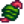
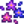
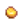
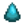
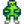

Fishing
This page or section contains unmarked spoilers from update 1.6 of Stardew Valley. Players may want to avoid or be cautious toward reading this article/section. |
- For a list of fish and their locations, see the Fish page.
- For an index to the completed fish collection, see the Fish Collection page.
- For the guide to catching all fish, see Fishing Strategy.
- See also: Tackle, Bait
Fishing is a skill associated with catching fish with a fishing rod or by collecting items from crab pots.
Overview & Controls

To cast a fishing rod into a body of water, hold down the Use Tool button ( on PC,
on PC,  button on Xbox,
button on Xbox,  on PlayStation,
on PlayStation,  on Switch). A meter appears, indicating how far the line will go. Release to cast. It is also possible to slightly alter the line's placement mid-cast with the movement keys (or controller stick), allowing for better control over aiming the cast and allowing to "cast diagonally" by 1 tile, which can make it possible to hit bubbles that would otherwise be unreachable.
on Switch). A meter appears, indicating how far the line will go. Release to cast. It is also possible to slightly alter the line's placement mid-cast with the movement keys (or controller stick), allowing for better control over aiming the cast and allowing to "cast diagonally" by 1 tile, which can make it possible to hit bubbles that would otherwise be unreachable.
When a fish bites, the bobber wiggles and an exclamation point appears above the player character's head along with a distinct sound. Click the Use Tool button to start the mini-game.
The mini-game display contains a movable green rectangle that indicates the area of effect for the fishing line. The goal of the fishing mini-game is to keep the small fish icon within the green rectangle until the progress bar to the right is completely filled. If the fish's icon moves above or below the green rectangle, the progress bar decreases, and the fish escapes if the progress bar reaches the bottom.
The green rectangle can be raised by pressing the Use Tool button. Repeated pressing holds the green in place when it is not on the bottom, and holding the button raises it at increasing speed. Be careful moving it though, for it gathers momentum quickly and takes time to reverse, making it easy to overshoot the fish and drain the progress bar.
Upon catching a fish, its name and size are displayed. Players can keep track of how many fish they have caught and their record lengths in their Collections menu.
The first time a player catches each specific kind of fish, a message saying "First catch!" appears.
Specific Mechanics
Types of Fish
The types of fish that can be found is determined by:
For example, the forest lake, the forest river, and the town river each contain their own types of fish, though there are some overlaps. The full list can be found on the Fishing Strategy page.
Also note that the Legendary Fish can only be caught on specific water tiles, but in general, the specific water tile does not matter.
Bar Size
The green rectangle increases in size with higher fishing skill level. The total number of pixels of the entire rectangle is 568. At Fishing level 0, the bar size has a length of 96 pixels. This is increased by 8 pixels for every increase in fishing level, so that at level 10, the bar size has a length of 176 pixels. The bar size can be further increased by using either the Cork Bobber or Deluxe Bait or increasing the fishing level past level 10 by using an enchant at the Forge or with food buffs. The maximum possible bar size is therefore 308 pixels, which can be achieved using the Advanced Iridium Rod and having level 10 fishing, using 2 cork bobbers, using deluxe bait, using the Master Enchant at the Forge, and eating Seafoam Pudding with Qi Seasoning and a dish with the Shrimp ingredient from the Chef at the Desert Festival. Outside of the Desert Festival, the maximum possible bar size is 284 pixels, exactly half of the total number of pixels of the rectangle.
The upgraded fishing rods (i.e., Fiberglass Rod, Iridium Rod, and Advanced Iridium Rod) do not affect the bar size. However, using the Training Rod does affect the bar size; it sets the player's fishing skill equal to level 5 for the purposes of determining how big to make the green bar, if the player has not reached level 5 yet.
Casting Distance
The player's skill level determines the maximum possible casting distance. At level 0, the maximum cast possible is 3 tiles to the south or north and 4 tiles to the east or west. The distance increases by 1 tile (in all directions) at levels 1, 4, 8 and 15.
Reaching a skill level of 15 is possible with a combination of food, Qi Seasoning and/or a Fishing Pole enchanted with the Master enchant.
The actual casting distance will be a fraction of the maximum distance, based on the fullness of the mini-game casting meter. Any cast that is more than 99% of the maximum distance is highlighted by the text "Max".[1] "Max" casts do not receive any special benefit.
The length of the cast is less important than where the bobber lands. Longer casts only improve fishing results if the bobber lands further from the shore. Standing next to the water's edge allows casts to go further from land, as does avoiding locations with other nearby shores (e.g., try to fish where a river is as wide and straight as possible).
Fish Bite Time
The fish bite time measures the amount of time that passes before a fish bites once the fishing rod is in the water. This base time is a random number between 0.6 and 30 seconds. Each increase in fishing level decreases the maximum amount of time it takes for a fish to bite by 0.25 seconds. The time it takes for a fish to bite is reduced by 25% if it will be the player's first fish bite after the fishing rod is the water (i.e. if they didn't fail to hook a fish before).
Using Bait, Magnet, Magic Bait, or any type of Targeted Bait decreases both the minimum and maximum amount of time it takes for a fish to bite by 50%. Wild Bait and Challenge Bait further decreases this by another 25%, for a total of a 62.5% decrease compared to no bait. Deluxe Bait decreases both the minimum and maximum amount of time it takes for a fish to bite by 67%.
The minimum amount of time it takes for a fish to bite cannot drop below 0.5 seconds.
Fishing Zone
| Article Stub
This article is marked as a stub for the following reason:
|
Every water tile is assigned a Fishing Zone of 0, 1, 2, 3, or 5[2] that controls many aspects of fishing. The further from land (in every direction), the better the zone. The game considers most walkable surfaces, including islands, piers, and stone bridges to be "land"; wooden footbridges are one exception.
If the bobber lands at least 5 tiles away from any land, it is located in zone 5. Otherwise, the zone is one less than the distance (in tiles) from the nearest land. Maps of Fishing Zone are available in the Fishing Strategy section on Fishing Zones. Note, however, that fishing zones on iOS and Android are more complicated because of a bug.
Higher fishing zone values provide several benefits:
- The chances of catching trash decrease.
- The size and quality (e.g., normal, silver, or gold) of the fish is on average better.
- The chances of hooking more difficult fish are slightly larger.
- Some treasure chest items have zone requirements. In particular, some valuable treasures can only be caught when the fishing zone is 5.
- Some Legendary Fish have zone requirements.
Darker shades of blue indicate deeper water. However, the color of the water is not a reliable indicator of the fishing zone for a given location. In some cases, dark blue (deep) water can have a fishing zone of 0 (e.g., next to the pier at the Beach). Conversely, light blue (shallow) water can have a fishing zone of 5 (e.g., at the east end of the Beach).
Perfect Catches
The game displays a "Perfect!" catch if the fish never leaves the green rectangle. It is also possible to obtain a perfect catch if the fish leaves the green rectangle when the Treasure Hunter tackle is equipped and the fish leaves the green rectangle only while the treasure chest is being captured. Perfect catches grant two benefits:
- If it is a silver or gold quality fish, the quality of the fish is increased by one. (i.e., a silver quality fish becomes a gold quality fish, a gold quality fish becomes an iridium quality fish).
- The amount of experience awarded for catching the fish is multiplied by 2.4.
Fish Size & Quality
The size of each fish caught using a Fishing Rod is dependent on the Fishing Zone, the farmer's Fishing Level, the type of fish, and how close to "Perfect" the catch was. When catching a fish, a "size factor", fishSize, is determined by the equation fishSize = Zone/5 * (Skill+2)/10 * Random/100, where "Zone" refers to the Fishing Zone, "Skill" refers to the farmer's Fishing Level (rounded down to the nearest even value), and "Random" is a random integer value between 90 and 110, inclusive. Also note that if the player has not reached Fishing level 10 yet, the value for Skill ranges ranges between all possible even numbers from the farmer's Fishing Level (rounded down to the nearest even value) and 10 inclusive. This size factor is then limited to a range of 0 to 1 inclusive.[3]
Each type of fish has a minimum and maximum size. When a fish is hooked, it is given an initial size based on these values and the size factor, equal to minFishSize + (maxFishSize - minFishSize) * fishSize + 1, rounded down, in inches.[4] The size shrinks by 1" for every 0.8 seconds that the fish is not being reeled in. However, the size cannot go below minFishSize. Additionally, if the catch was imperfect and the final size is equal to maxFishSize exactly, the fish size is reduced by 1".[5] A consequence of this procedure is that the maximum possible fish size observed in game is always 1 higher than the value of maxFishSize, which can be obtained with perfect or near-perfect catch (less than 0.8 seconds not reeling in the fish). In addition, some fish have the same values for minFishSize and maxFishSize, such as the Legendary Fish and non-Ghostfish Mines fish. Due to the final adjustment for non-perfect catches, the minimum possible size for these fish is 1 lower than the value of minFishSize specified in the data.
Some fish, namely the Sandfish, Scorpion Carp, and Goby, cannot be caught at their maximum theoretical size, as they are limited by the size of their ponds which only have a maximum Fishing Zone of 2.
Base fish quality is determined directly by the value of fishSize. A value below 0.33 corresponds to normal quality, a value between 0.33 and 0.66 corresponds to silver quality, and a value of 0.66 or higher corresponds to gold quality. This quality can be improved by one grade for each Quality Bobber equipped. It can also be improved by one grade with a perfect catch as long as the fish was at least silver quality initially. These boosts stack, with the Quality Bobber boost considered before the Perfect Catch boost. Since the maximum base fish quality is gold, the only way to get an iridium quality fish is by either getting a perfect catch or using the Quality Bobber.[6]
Any fish caught using a Training Rod has its size set to the minimum and its quality set to normal, overriding the above procedure.[7]
Below is the table for the possible quality of the fish depending on the base fish quality, if the catch was perfect, and how many Quality Bobbers were used.
| Base Fish Quality | With 1 Quality Bobber | With 2 Quality Bobbers | With Perfect Catch | With Perfect Catch + 1 Quality Bobber | With Perfect Catch + 2 Quality Bobbers |
|---|---|---|---|---|---|
| Normal | Silver | Gold | Normal | Gold | Iridium |
| Silver | Gold | Iridium | Gold | Iridium | Iridium |
| Gold | Iridium | Iridium | Iridium | Iridium | Iridium |
Below is the table for the chances of getting certain fish sizes and base quality based on particular fishing zones and fishing levels. Note that this Base Fish Quality does not take into account improvements in quality from perfect catches or from the Quality Bobber. Those adjustments are made after the Base Fish Quality is determined as described in the previous table.
Note that Fishing levels greater than 16 are only possible during the Desert Festival, as the player must eat a dish from the Chef with the Shrimp ingredient.
| Fishing Zone | Fishing Level | Size Factor | Base Fish Quality (% chance) | Perfect Fish Size (inches) | ||||
|---|---|---|---|---|---|---|---|---|
| min | max | Normal | Silver | Gold | Sardine | Herring | ||
| 1 | 0-1 | 0.04 | 0.22 | 100 | 0 | 0 | 2 - 4 | 9 - 11 |
| 1 | 2-3 | 0.07 | 0.22 | 100 | 0 | 0 | 2 - 4 | 9 - 11 |
| 1 | 4-5 | 0.11 | 0.22 | 100 | 0 | 0 | 3 - 4 | 10 - 11 |
| 1 | 6-7 | 0.14 | 0.22 | 100 | 0 | 0 | 3 - 4 | 10 - 11 |
| 1 | 8-9 | 0.18 | 0.22 | 100 | 0 | 0 | 3 - 4 | 11 |
| 1 | 10-11 | 0.22 | 0.26 | 100 | 0 | 0 | 4 | 11 - 12 |
| 1 | 12-13 | 0.25 | 0.31 | 100 | 0 | 0 | 4 - 5 | 12 |
| 1 | 14-15 | 0.29 | 0.35 | 67 | 33 | 0 | 5 | 12 - 13 |
| 1 | 16-17 | 0.32 | 0.40 | 10 | 90 | 0 | 5 - 6 | 12 - 13 |
| 1 | 18-19 | 0.36 | 0.44 | 0 | 100 | 0 | 5 - 6 | 13 - 14 |
| 2 | 0-1 | 0.07 | 0.44 | 73 | 27 | 0 | 2 - 6 | 9 - 14 |
| 2 | 2-3 | 0.14 | 0.44 | 67 | 33 | 0 | 3 - 6 | 10 - 14 |
| 2 | 4-5 | 0.22 | 0.44 | 56 | 44 | 0 | 4 - 6 | 11 - 14 |
| 2 | 6-7 | 0.29 | 0.44 | 33 | 67 | 0 | 5 - 6 | 12 - 14 |
| 2 | 8-9 | 0.36 | 0.44 | 0 | 100 | 0 | 5 - 6 | 13 - 14 |
| 2 | 10-11 | 0.43 | 0.53 | 0 | 100 | 0 | 6 - 7 | 14 - 15 |
| 2 | 12-13 | 0.50 | 0.62 | 0 | 100 | 0 | 7 - 8 | 15 - 16 |
| 2 | 14-15 | 0.58 | 0.70 | 0 | 67 | 33 | 8 - 9 | 15 - 17 |
| 2 | 16-17 | 0.65 | 0.79 | 0 | 10 | 90 | 9 - 10 | 16 - 18 |
| 2 | 18-19 | 0.72 | 0.89 | 0 | 0 | 100 | 9 - 11 | 17 - 19 |
| 3 | 0-1 | 0.11 | 0.66 | 42 | 57 | 1 | 3 - 9 | 10 - 16 |
| 3 | 2-3 | 0.22 | 0.66 | 27 | 71 | 1 | 4 - 9 | 11 - 16 |
| 3 | 4-5 | 0.32 | 0.66 | 3 | 95 | 2 | 5 - 9 | 12 - 16 |
| 3 | 6-7 | 0.43 | 0.66 | 0 | 98 | 2 | 6 - 9 | 14 - 16 |
| 3 | 8-9 | 0.54 | 0.66 | 0 | 95 | 5 | 7 - 9 | 15 - 16 |
| 3 | 10-11 | 0.65 | 0.79 | 0 | 10 | 90 | 9 - 10 | 16 - 18 |
| 3 | 12-13 | 0.76 | 0.92 | 0 | 0 | 100 | 10 - 12 | 18 - 20 |
| 3 | 14-15 | 0.86 | 1.00 | 0 | 0 | 100 | 11 - 13 | 19 - 21 |
| 3 | 16-17 | 0.97 | 1.00 | 0 | 0 | 100 | 13 | 21 |
| 3 | 18-19 | 1.00 | 1.00 | 0 | 0 | 100 | 13 | 21 |
| 5 | 0-1 | 0.18 | 1.00 | 20 | 39 | 41 | 3 - 13 | 11 - 21 |
| 5 | 2-3 | 0.36 | 1.00 | 0 | 49 | 51 | 5 - 13 | 13 - 21 |
| 5 | 4-5 | 0.54 | 1.00 | 0 | 32 | 68 | 7 - 13 | 15 - 21 |
| 5 | 6-7 | 0.72 | 1.00 | 0 | 0 | 100 | 9 - 13 | 17 - 21 |
| 5 | 8-9 | 0.90 | 1.00 | 0 | 0 | 100 | 11 - 13 | 19 - 21 |
| 5 | 10-11 | 1.00 | 1.00 | 0 | 0 | 100 | 13 | 21 |
| 5 | 12-13 | 1.00 | 1.00 | 0 | 0 | 100 | 13 | 21 |
| 5 | 14-15 | 1.00 | 1.00 | 0 | 0 | 100 | 13 | 21 |
| 5 | 16-17 | 1.00 | 1.00 | 0 | 0 | 100 | 13 | 21 |
| 5 | 18-19 | 1.00 | 1.00 | 0 | 0 | 100 | 13 | 21 |

Bubbles
Sometimes, a pool of bubbles appears in the water. Casting into them results in blue sparkles appearing. Bubbles grant two benefits:[8]
- Fish bite four times faster.
- When determining the type of fish that is hooked, the effective Fishing Zone is increased by 1, i.e., trash is less likely to be caught and difficult-to-catch are more likely. Some Legendary Fish can be found closer to the shore when bubbles are present.
- This adjustment to the fishing zone only applies to the type of fish that is caught. Bubbles have no effect on fish size or quality or on treasure chests.
No more than one bubble spot can exist per area (e.g., Pelican Town, Cindersap Forest) at any given time, but different bubble spots can occur in multiple areas simultaneously. Some bubble spots are not possible for the player to reach with the fishing rod. Bubble spots cannot spawn on the Farm unless the player has chosen the Riverland Farm Map[9].
Fish Frenzies
Fish Frenzies are events that can randomly happen during the day (before 11 PM) at either The Beach, Cindersap Forest, Pelican Town, or The Mountain. They can only occur if the player has caught at least three fish and has played for at least 3 days. They can happen regardless of how many fish have been caught if the player has played for at least 14 days. Fish Frenzies cannot happen on Festival days.
During a frenzy, bubbles will spawn for a specific fish (one that can be caught in that location on that day) in that location. When a Fish Frenzy happens, players are notified with the message " A(n) [Fish name] frenzy has begun in [location]." When fishing in these bubbles, the chances of catching the fish for the frenzy is increased significantly. The effects of these bubbles are similar to those of the combination of normal bubbles and Targeted Bait. Legendary Fish and catchable items will never be the specific fish for the frenzy.
Energy
At fishing skill level 0, casting a fishing pole consumes 8 energy. Each subsequent fishing level decreases the amount of energy used by 0.1. (While the game shows whole numbers, internally it does not round numbers.) Thus, on the 10th cast at level 1 fishing, the game shows an energy cost of only 7 instead of 8. At level 10 fishing, all casts use 7 energy.
Angled Casts
It is possible to slightly alter the line's placement mid-cast with the movement keys, allowing better control over aiming the cast. Angling the cast is useful in two scenarios:
- In some non-standard fishing spots, it is necessary to angle the cast to get further from land.
- When bubbles spawn in an awkward location, it is sometimes necessary to angle the cast to get the bobber to land in them. Some bubble spots are completely unreachable.
Time
- In single-player:
- Time is paused while the mini-game is active.
- If the player is attacked (for example, by a slime while fishing in the Secret Woods), the slime will continue to attack and damage the player during the minigame, even though the clock is paused.
- Active buffs will wear out during the mini-game.
- Time is not paused during the animation when the casting bar is increasing.
- Time is not paused during the animation when the line is going out.
- Time is not paused during the animation when the fish is flying back towards the player.
- Time is not paused during the popup that shows the player what type of fish they have caught.
- If the player caught a treasure chest, time is paused while looking through the chest's inventory.
- Time is paused while the mini-game is active.
- In multiplayer, time is never paused.
- During the fishing minigame at the Stardew Valley Fair and the ice-fishing contest at the Festival of Ice, the contest timer is never paused.
Fishing Poles
| Image | Name | Cost | Improvements | Location | Requirements |
|---|---|---|---|---|---|
| Training Rod | Easier to use (only catches common Fish). | Buy from Willy's Fish Shop | |||
| Bamboo Pole | Given to the player by Willy Buy from Willy's Fish Shop |
||||
| Fiberglass Rod | Able to use bait. | Buy from Willy's Fish Shop | (The player receives a letter the day after it becomes available) | ||
| Iridium Rod | Able to use bait & tackle. | Buy from Willy's Fish Shop | (The player receives a letter the day after it becomes available) | ||
| Advanced Iridium Rod | N/A | Able to use bait & 2 tackles. | Mastery Cave | Claiming |
 Fishing Skill
Fishing Skill
Fishing Skill is increased by catching Fish, Trash, Seaweed, Green Algae, or White Algae with a Fishing Rod/Pole, by harvesting Crab Pots, or by collecting items from Fish Ponds.
Each level grants +1 Fishing Rod Proficiency, increases the minimum fish size (in/cm) and bobber bar height, and decreases the max amount of time before a fish bites by 0.25 seconds.
| Level 1 | Level 2 | Level 3 | Level 4 | Level 5 | |
|---|---|---|---|---|---|
| Crafting Recipes: | Crafting Recipes: | Crafting / Cooking Recipes: | Crafting Recipes: | Choose a Profession: | |
| Casting distance increased by one tile |
|
|
|
|
|
| Level 6 | Level 7 | Level 8 | Level 9 | Level 10 | |
| Crafting Recipes: | Crafting Recipes: | Crafting Recipes: | Crafting / Cooking Recipes: | Fisher: | Trapper: |
|
|
|
|
|
|
|
|||||
Experience Points
Trash, algae and seaweed caught with the fishing pole earn 3 XP each, and crab pots earn the player 5 XP each time the player collects from them, no matter what is collected. Otherwise, for each catch of fish, the amount of experience earned is as follows: [10]
XP = ((Fish Quality + 1) * 3) + (Fish Difficulty / 3)
- Fish Quality = 0 for normal, 1 for silver, 2 for gold, or 4 for iridium
- Fish Difficulty is a number from 5-110, listed in the data file Fish.xnb.
For example, a regular quality sardine (difficulty 30) would net the player (0 + 1) * 3 + (30 / 3) = 13 XP. Trash also follows this formula with a quality and difficulty of zero leaving only the base 3 XP.
XP is multiplied by 2.2 if the player also catches a treasure chest, by 2.4 if the catch was "perfect" and by 5 if the catch was a Legendary fish. These multiplications stack, and are performed in order (first treasure chest, then perfect, then Legendary). If at any point in the calculation the XP is not a whole number, the decimal part of the number is truncated off before performing the next calculation.
For example, catching a perfect Sardine with a treasure chest would earn the player 13 * 2.2 = 28.6 (truncated to 28) XP, then 28 * 2.4 = 67.2 (truncated to 67) XP.
A perfect catch will increase a silver quality fish to gold quality, and a gold quality fish to iridium quality, but it is the original quality that is used in the XP equation.
For example, catching a perfect Iridium quality Sardine would use the original gold quality multiplier, so the player would earn ((2 + 1) * 3) + (30 / 3) * 2.4 = 45 XP.
As another example, catching a perfect gold quality Crimsonfish (difficulty 95) with a treasure chest would net the player ((1 + 1) * 3) + (95 / 3) = 37.67 (truncated to 37) base XP; 37 * 2.2 = 81.4 (truncated to 81) XP; 81 * 2.4 = 194.4 (truncated to 194) XP; 194 * 5 = 970 XP.
Experience level is increased immediately upon harvesting a Crab Pot or catching an item with a fishing pole, but the "level up" window doesn't appear until after going to sleep.
The XP required for leveling up is the same as for all skills:
| Lvl | Total Experience |
Total Sardines (No stars) |
Total Gold Star Legend Fish (225XP) |
Total Crab Pot |
|---|---|---|---|---|
| 1 | 100 | 8 | 1 | 20* |
| 2 | 380 | 30 | 2 | 76 |
| 3 | 770 | 60 | 4 | 154 |
| 4 | 1300 | 100 | 6 | 260 |
| 5 | 2150 | 166 | 10 | 430 |
| 6 | 3300 | 254 | 15 | 660 |
| 7 | 4800 | 370 | 22 | 960 |
| 8 | 6900 | 531 | 31 | 1380 |
| 9 | 10000 | 770 | 45 | 2000 |
| 10 | 15000 | 1154 | 67 | 3000 |
*Note: The first few levels of fishing cannot normally be completed with Crab Pots, because the player does not have access to Bait until level 2 and Crab Pots until level 3. However, the recipe for Wild Bait can be earned by befriending Linus and viewing his four heart cutscene. Three crab pots can be earned at any Fishing Level by completing the  Crab Pot Bundle in the Fish Tank. Completing the bundle without playing the fishing mini-game (or using crab pots) requires 4 fish foraged from the beach and 1 crab obtained by killing crabs in the mines.
Crab Pot Bundle in the Fish Tank. Completing the bundle without playing the fishing mini-game (or using crab pots) requires 4 fish foraged from the beach and 1 crab obtained by killing crabs in the mines.
Note that an alternative method of gaining Fishing XP is by using Fish Ponds.
Food
Certain cooked dishes will temporarily increase fishing level. Qi Seasoning can be applied to further increase the stat buff for dishes cooked by the player.
| Image | Name | Description | Ingredients | Energy / Health | Buff(s) | Buff Duration | Recipe Source(s) | Sell Price | |||
|---|---|---|---|---|---|---|---|---|---|---|---|
| Chowder | A perfect way to warm yourself after a cold night at sea. |
|
|||||||||
| Dish O' The Sea | This'll keep you warm in the cold sea air. | ||||||||||
| Escargot | Butter-soaked snails cooked to perfection. |
|
|||||||||
| Fish Stew | It smells a lot like the sea. Tastes better, though. |
|
|||||||||
| Fish Taco | It smells delicious. |
|
|||||||||
| Lobster Bisque | This delicate soup is a secret family recipe of Willy's. |
|
|||||||||
| Maple Bar | It's a sweet doughnut topped with a rich maple glaze. |
|
|||||||||
| Seafoam Pudding | This briny pudding will really get you into the maritime mindset! | ||||||||||
| Shrimp Cocktail | A sumptuous appetizer made with freshly-caught shrimp. |
|
|||||||||
| Trout Soup | Pretty salty. |
|
Below is a table of the fishing buffs that can be obtained from the Chef at the Desert Festival. These stack with normal food buffs.
| Image | Name | Buffs | Buff Duration | Ingredients |
|---|---|---|---|---|
| Cioppino | Shrimp + Rich Marinara | |||
| Rainforest Shrimp | Shrimp + Mushroom Creme | |||
| Shrimp Donut | Shrimp + Cherry Syrup | |||
| Smell Of The Sea | Shrimp + Pungent Garlic | |||
| Desert Gumbo | Shrimp + Uncomfortably Hot Sauce |
Treasure Chests
During the fishing mini-game, between 1 and 3 seconds after it starts, a treasure chest may appear inside the vertical bar. The base chance of finding a chest is 15%. The probability can be increased by 15% with the Magnet, by 5% with the Treasure Hunter tackle equipped (by 10% with two equipped), and by 15% with the Pirate profession. This is adjusted by half the value of daily luck, increasing by 5% at best or decreasing by 5% at worst, with the Special Charm adding 1.25%. Food/drink buffs add 0.5% for every point of Luck.[11] Treasure chests will never appear when playing the fishing minigame at the Stardew Valley Fair or during the fishing contest at the Festival of Ice.
Treasure chests have their own progression bar, fillable by keeping the green bobber bar behind the treasure chest icon  . If obtained, the player is awarded random bonus loot after catching the fish. Losing the fish also loses the treasure chest.
. If obtained, the player is awarded random bonus loot after catching the fish. Losing the fish also loses the treasure chest.
After successfully catching a fish and a treasure chest, the treasure chest items will appear in a menu. In the case of successfully catching a fish and a treasure chest while inventory is full, the caught fish will appear in the treasure chest menu alongside any treasures caught. Dismissing the menu before putting all of the items into inventory will forfeit the rest of the items.
Multiple items can appear in a treasure chest. If multiple items appear in a chest, the same item can appear in multiple slots (with some exceptions, such as special items from festivals). The number of items specified in the table is the number that can appear in a single stack (e.g., at most one lost book appears in a stack, but two lost books are possible if each appears in a different stack).
Daily Luck, along with the Fishing Zone, slightly increases the chances that various special items appear (as indicated by in the following table). Luck Buffs increase the chance that a stack of resources or geodes will double in size and also allow better rings to appear (Magnet Ring instead of Small Magnet Ring and Glow Ring instead of Small Glow Ring).
Golden Treasure Chests
After claiming Fishing Mastery, the treasure chest that appears when fishing may be golden. The base chance of a fishing treasure chest being golden is 25%. This is adjusted by the value of daily luck, increasing by 10% at best or decreasing by 10% at worst, with the Special Charm adding 2.5%.[11]
Golden treasure chests provide on average more items than normal treasure chests and golden treasure chests have about a 70% chance of containing at least one of the following items:[12] Iridium Bar, Bait And Bobber, Combat Quarterly, Mining Monthly, Stardew Valley Almanac, Woodcutter's Weekly, Carrot Seeds, Summer Squash Seeds, Broccoli Seeds, Powdermelon Seeds, Fish Taco, Fairy Dust, Dressed Spinner, Challenge Bait, Magnet, Stardrop Tea, Pearl, Shrimp Cocktail, Fish Stew, and Sonar Bobber. Most of these items cannot be found in normal fishing treasure chests, and those that can have much greater chances of being found in golden ones.
Contents
The following is a list of all items that can be found inside treasure chests.[12] The "Chance" columns provide the probability per treasure chest (normal and golden) that the item will appear at least once in the treasure chest, if all of the requirements for the item are met.
All of the items listed below, with the exception of Mixed Seeds, can be found in golden treasure chests. Iridium Bar, Carrot Seeds, Summer Squash Seeds, Broccoli Seeds, Powdermelon Seeds, Fish Taco, Fairy Dust, Challenge Bait, Magnet, Stardrop Tea, Pearl, Shrimp Cocktail, and Fish Stew cannot be found in normal treasure chests.
| Item | Number in Stack | Fishing Level Required | Notes | Chance (normal) | Chance (golden) | |
|---|---|---|---|---|---|---|
| 2-10 | Spring only, not at The Beach | 14% | 18% | |||
|  Wild Bait | 2-10 | Must know the recipe for Wild Bait Chance is significantly increased if more than one fish is caught simultaneously, which is reflected with the extra percentage ranges given |
8-9%, 64-65% | 5-6%, 69% | ||
| 1-4 | Only if the Qi's Crop Quest is active | 43% | 51% | |||
| 1 | Requires having seen Mr. Qi's cutscene and Foraging Mastery not obtained Chance increases with higher daily luck and if the player has received the power from the Book of Mysteries |
6-15% | 8-19% | |||
| 1 | Requires obtaining Foraging Mastery Chance increases with higher daily luck and if the player has received the power from the Book of Mysteries |
6-15% | 8-19% | |||
| 1 | Requires obtaining Farming Mastery | 7% | 9% | |||
| 1-5 | 0% | 7% | ||||
| 1 | Must have already opened at least 3 other fishing treasure chests to obtain in normal chests | 0.12%[13] | 1.5% | |||
| Mining Monthly | 1 | Must have already opened at least 3 other fishing treasure chests to obtain in normal chests | 0.12%[13] | 1.5% | ||
| 1 | Must have already opened at least 3 other fishing treasure chests to obtain in normal chests | 0.12%[13] | 1.5% | |||
| 1 | Must have already opened at least 3 other fishing treasure chests to obtain in normal chests | 0.12%[13] | 1.5% | |||
| 1 | Must have already opened at least 3 other fishing treasure chests to obtain in normal chests | 0.12%[13] | 1.5% | |||
| 8 | Must be between Winter 21 and Spring 23 | 0% | 7% | |||
| 8 | Must be between Spring 24 and Summer 20 | 0% | 7% | |||
| 8 | Must be between Summer 21 and Fall 20 | 0% | 7% | |||
| 8 | Must be between Fall 21 and Winter 20 | 0% | 7% | |||
| 1 | 0% | 7% | ||||
| 3-5 | 0% | 7% | ||||
| 1 | 6+ | Fishing Zone must be 5 to obtain in normal chests | 4% | 7-9% | ||
|  Challenge Bait | 3-5 | 0% | 7% | |||
| 3-5 | 0% | 7% | ||||
| 1 | 0% | 7% | ||||
| 1 | 0% | 7% | ||||
| 1 | 0% | 7% | ||||
| 1 | 0% | 7% | ||||
| 1 | 6+ | Chance is higher if the recipe for Wild Bait isn't known | 3-4% | 9-10% | ||
| 1-2 | Fishing Zone must be 5 | 1.1% | 0.7% | |||
|  Gold Ore | 1-24 | Fishing Zone must be 5 | 9% | 6% | ||
| 1-24 | Fishing Zone must be 3 or 5, More likely at Fishing Zone 3 | 5-10% | 3-6% | |||
| 1-24 | More likely at lower Fishing Zone values | 5-12% | 3-8% | |||
| 1-24 | More likely at lower Fishing Zone values | 5-6% | 3-4% | |||
| 1-24 | More likely at lower Fishing Zone values | 5-6% | 3-4% | |||
| 1-24 | More likely at Fishing levels less than 2 and at lower Fishing Zones and if Lost Books and Artifacts cannot be found | 9-50% | 6-27% | |||
| 5 | 6+ | Chance is higher if the recipe for Wild Bait isn't known | 21-30% | 14-20% | ||
| 1-15 | Chance of obtaining is significantly reduced starting at Fishing level 6 Cannot appear in multiple slots starting at Fishing level 6 |
9-37% | 6-9% | |||
| 1 | Only if at least 1 Lost Book has already been found, and the Museum's Library collection is not complete | 4% | 2% | |||
| 1 | 2+ | Only if at least 1 artifact has already been found | 2.8-3.1%[14] | 1.7-1.9%[14] | ||
| 1 | 2+ | Only if at least 1 artifact has already been found | 2.8-3.1%[14] | 1.7-1.9%[14] | ||
| 1 | 2+ | Only if at least 1 artifact has already been found | 2.8-3.1%[14] | 1.7-1.9%[14] | ||
| 1 | 2+ | Only if at least 1 artifact has already been found | 0.7-0.8%[14] | 0.5%[14] | ||
| 1 | 2+ | Only if at least 1 artifact has already been found | 0.7-0.8%[14] | 0.5%[14] | ||
| 1 | 2+ | Only if at least 1 artifact has already been found | 0.7-0.8%[14] | 0.5%[14] | ||
| 1 | 2+ | Only if at least 1 artifact has already been found | 0.7-0.8%[14] | 0.5%[14] | ||
| 1 | 2+ | Only if at least 1 artifact has already been found | 0.7-0.8%[14] | 0.5%[14] | ||
| 1 | 2+ | Only if at least 1 artifact has already been found | 0.7-0.8%[14] | 0.5%[14] | ||
| 1 | 2+ | Only if at least 1 artifact has already been found | 0.7-0.8%[14] | 0.5%[14] | ||
| 1 | 2+ | Only if at least 1 artifact has already been found | 0.7-0.8%[14] | 0.5%[14] | ||
| 1 | 2+ | Only if at least 1 artifact has already been found | 0.7-0.8%[14] | 0.5%[14] | ||
| 1 | 2+ | Only if at least 1 artifact has already been found | 0.7-0.8%[14] | 0.5%[14] | ||
| 1 | 2+ | Only if at least 1 artifact has already been found | 0.7-0.8%[14] | 0.5%[14] | ||
| 1 | 2+ | Only if at least 1 artifact has already been found | 0.7-0.8%[14] | 0.5%[14] | ||
| 1 | 2+ | Only if at least 1 artifact has already been found | 0.7-0.8%[14] | 0.5%[14] | ||
| 1 | 2+ | Only if at least 1 artifact has already been found | 0.7-0.8%[14] | 0.5%[14] | ||
| 1 | 2+ | Only if at least 1 artifact has already been found | 0.7-0.8%[14] | 0.5%[14] | ||
| 1 | 2+ | Only if at least 1 artifact has already been found | 0.7-0.8%[14] | 0.5%[14] | ||
| 1 | 2+ | Only if at least 1 artifact has already been found | 0.7-0.8%[14] | 0.5%[14] | ||
| 1-6 | More likely at lower Fishing Zones | 4-16% | 2-11% | |||
| 1-6 | Fishing Zone must be 5 | 5% | 3% | |||
|  Frozen Geode | 1-6 | Fishing Zone must be 3 or 5, More likely at Fishing Zone 3 | 4-12% | 2-8% | ||
| 1-4 | 2+ | Fishing Zone must be 5 | 3.7% | 2.3% | ||
| 1-4 | 2+ | Fishing Zone must be 5 | 4.3% | 2.7% | ||
| 1-4 | 2+ | Fishing Zone must be 5 | 4.3% | 2.7% | ||
| 1-4 | 2+ | Fishing Zone must be 3 | 3.7% | 2.3% | ||
| 1-4 | 2+ | Fishing Zone must be 3 | 4.3% | 2.7% | ||
| 1-4 | 2+ | Fishing Zone must be 3 | 4.3% | 2.7% | ||
| 1-4 | 2+ | Fishing Zone must be 2 or less | 3.7% | 2.3% | ||
| 1-4 | 2+ | Fishing Zone must be 2 or less | 4.3% | 2.7% | ||
| 1-4 | 2+ | Fishing Zone must be 2 or less | 4.3% | 2.7% | ||
| 1-2 | 2+ | More likely at higher Fishing Zone values | 3-4% | 2-3% | ||
| 1-3 | <2 | 12% | 0% | |||
| 1 | 2+ | 0.6%[13] | 0.4%[13] | |||
| 1 | 2+ | 0.6%[13] | 0.4%[13] | |||
| 1 | 2+ | 0.29%[13] | 0.18%[13] | |||
| 1 | 2+ | Requires a Luck buff; chance increases with magnitude of buff | 0.03-0.09%[13] | 0.02-0.06%[13] | ||
| 1 | 2+ | 0.29%[13] | 0.18%[13] | |||
| 1 | 2+ | Requires a Luck buff; chance increases with magnitude of buff | 0.03-0.09%[13] | 0.02-0.06%[13] | ||
| 1 | 2+ | 0.05%[13] | 0.03%[13] | |||
| 1 | 2+ | 0.05%[13] | 0.03%[13] | |||
| 1 | 2+ | 0.05%[13] | 0.03%[13] | |||
| 1 | 2+ | 0.05%[13] | 0.03%[13] | |||
| 1 | 2+ | 0.05%[13] | 0.03%[13] | |||
| 1 | 2+ | 0.05%[13] | 0.03%[13] | |||
| 1 | 2+ | 0.24%[13] | 0.16%[13] | |||
| 1 | 6+ | 0.012%[13] | 0.008%[13] | |||
| 1 | 2+ | Possible even if no artifacts previously found | 0.12%[13] | 0.08%[13] | ||
|  Strange Doll | 1 | 2+ | Possible even if no artifacts previously found | 0.12%[13] | 0.08%[13] | |
| 1 | 2+ | 0.12%[13] | 0.08%[13] | |||
| 1 pair | 2+ | 0.012%[13] | 0.008%[13] | |||
| 1 pair | 2+ | 0.012%[13] | 0.008%[13] | |||
| 1 pair | 2+ | 0.012%[13] | 0.008%[13] | |||
| 1 pair | 2+ | 0.012%[13] | 0.008%[13] | |||
| 1 pair | 2+ | 0.012%[13] | 0.008%[13] | |||
| 1 pair | 2+ | 0.012%[13] | 0.008%[13] | |||
| 1 pair | 2+ | 0.012%[13] | 0.008%[13] | |||
| 1 pair | 2+ | 0.012%[13] | 0.008%[13] | |||
| 1 pair | 2+ | 0.012%[13] | 0.008%[13] | |||
| 1 pair | 2+ | 0.012%[13] | 0.008%[13] | |||
| 1 | Requires achieving Perfection | 0.12%[13] | 0.08%[13] | |||
| 1 | Can only get when Willy's "Golden Bobber" quest is active during the Desert Festival and cannot already have Golden Bobber in inventory Cannot appear in multiple slots |
100% | 100% | |||
| 1-6 | Requires having the power obtained from the Jewels Of The Sea book, gives the same fish roe as the fish being caught Cannot appear in multiple slots |
25% | 25% | |||
| 1 | 5+ | Must have already opened at least 2 other fishing treasure chests, chance is greater if book has not been found before Cannot appear in multiple slots |
>=2%[15] | >=2%[15] | ||
| 1 | Can only get during the Trout Derby festival when catching a Rainbow Trout with a Golden Tag Cannot appear in multiple slots |
100% | 100% |
Presents
By fishing in certain locations, gift boxes containing furniture or hats may be obtained. These include:
| Image | Name | Location |
|---|---|---|
| 'Boat' | Fish at the southwest spot of the Beach Farm. | |
| Decorative Trash Can | Fish in the fountain west of the Community Center in Pelican Town. This item can also be found in the Furniture Catalogue. | |
| Foliage Print | Fish in the river at the west of Ginger Island North. | |
| Frog Hat | Fish in Gourmand Frog's cave on Ginger Island. | |
| Gourmand Statue | Fish in the Pirate Cove on Ginger Island. | |
| Iridium Krobus | Fish at the southernmost point of Cindersap Forest near the entrance to the Sewers with a fishing level of at least 15. | |
| Lifesaver | Fish in the backroom of Willy's Fish Shop. | |
| 'Physics 101' | Fish in the Volcano Caldera. | |
| Pyramid Decal | Fish in the southern pond in the Calico Desert. | |
| Squirrel Figurine | Fish at the west edge of the river in an area on Ginger Island accessible through the volcano. | |
| 'Vista' | Fish in the pond outside the Spa to find a 'Vista' painting. (Cannot be obtained in Winter.) | |
| Wall Basket | Fish in the Secret Woods pond during any season. |
Achievements
There are 4 Achievements related to Fishing. Note that catching Green Algae, White Algae, or Seaweed counts towards these achievements.
- Fisherman (Catch 10 different fish)
- Ol' Mariner (Catch 24 different fish)
- Mother Catch (Catch 100 fish)
- Master Angler (Catch every fish)
Bugs
- On iOS and Android, there is a bug that alters most the Fishing Zone at most locations. The fishing zone is effectively calculated as if the bobber were located one tile northwest of its actual location. Therefore, casts to the south and east typically have a lower zone than they should; casts to the north and west typically have a better zone. This bug affects fish size/quality and treasure chest contents, but it does not affect the locations where Legendary Fish can be caught.
References
- See FishingRod::doStartCasting in the game code.
- The fishing zone is calculated by the function FishingRod::distanceToLand; the value is assigned to the variable clearWaterDistance.
- The size factor is determined in the function FishingRod::startMinigameEndFunction in the game code.
- The values for minFishSize and maxFishSize are given in Data/Fish.xnb in the game files, while the procedure to actually calculate initial fish size is given in BobberBar::BobberBar in the game code.
- The shrinking of fish from their initial size to their final size can be found in BobberBar::Update in the game code
- The conversion from fishSize to fishQuality can be found in BobberBar::BobberBar in the game code.
- The effect of the Training Rod on Fish Size and Quality is determined in BobberBar::BobberBar in the game code.
- The effects of bubbles on fishing bite times is handled in FishingRod::DoFunction, specifically at if (location.fishSplashPoint != null). The effect of bubbles on fish type is also in FishingRod::doFunction in the call to location.getFish, where the argument waterDepth is set to clearWaterDistance + (splashPoint ? 1 : 0).
- The bubbles, or 'fishSplashPoint' is placed in GameLocation::performTenMinuteUpdate.
- See FishingRod::doPullFishFromWater in the game code.
- 11.0 11.1 See FishingRod::startMinigameEndFunction in the game code.
- 12.0 12.1 The contents of a treasure chest are determined by FishingRod::openTreasureMenuEndFunction.
- 13.00 13.01 13.02 13.03 13.04 13.05 13.06 13.07 13.08 13.09 13.10 13.11 13.12 13.13 13.14 13.15 13.16 13.17 13.18 13.19 13.20 13.21 13.22 13.23 13.24 13.25 13.26 13.27 13.28 13.29 13.30 13.31 13.32 13.33 13.34 13.35 13.36 13.37 13.38 13.39 13.40 13.41 13.42 13.43 13.44 13.45 13.46 13.47 13.48 13.49 13.50 13.51 13.52 13.53 13.54 13.55 13.56 13.57 13.58 13.59 13.60 The chance of a special item appearing in a treasure chest is adjusted by LuckModifier, which is set to (1 + DailyLuck) * FishingZone/5. This means that fishing zone is the most important factor, as special items are 5x more likely to be found when caught in a fishing zone of 5 instead of 1. Special items are only 1.25x more likely to be found with maximum daily luck (0.125) instead of minimum (-0.1). For example, the chance of finding a Broken Trident varies from 0.075% (DailyLuck=-0.1, FishingZone=1) to 0.469% (DailyLuck=0.125, FishingZone=5). The page lists the chance of finding special items with neutral luck and Zone=5.
- 14.00 14.01 14.02 14.03 14.04 14.05 14.06 14.07 14.08 14.09 14.10 14.11 14.12 14.13 14.14 14.15 14.16 14.17 14.18 14.19 14.20 14.21 14.22 14.23 14.24 14.25 14.26 14.27 14.28 14.29 14.30 14.31 14.32 14.33 14.34 14.35 14.36 14.37 14.38 14.39 The chance of an artifact appearing in a treasure chest is higher if Lost Books are not possible, e.g., after the Museum's collection is complete.
- 15.0 15.1 If the player has not obtained the Jewels Of The Sea book before, the chances of the book appearing is 0.02+0.001*X, where X is the total amount of treasure chests the player has opened. If the player has obtained the book before, the chance is constant at 0.021.
History
- 1.4: Introduced Training Rod. Can now attach baits, tackles, etc., directly from a treasure chest. Bottom edge of fishing bobber bar made slightly more generous. Effect of fishing level on fish size no longer caps at 10. Removed exploit where clicking the journal icon would pause time but still allow fish to bite. Fixed bug where player's fishing level and bait were not taken into account for the wait time if the first nibble was missed.
- 1.5: Added fishing presents. Added Golden Eggs and Qi Beans to potential treasure chest rewards. Catching a non-fish item no longer triggers the minigame. Added option to choose between multiple fish-bite chime sounds.
- 1.5.2: Fixed crash when fishing on the Farm using Magic Bait.
- 1.5.4: Fixed softlock when fishing with multiple rods in inventory after catching a treasure and casting from a different rod.
- 1.5.5: Fixed issue preventing certain spots in the Mountain lake from spawning bubbles.
- 1.6: Added Advanced Iridium Rod. Submerged fishing bobber now automatically recolored to match the water. Added Mystery Box, Golden Mystery Box, Golden Animal Cracker, Sonar Bobber, Deluxe Bait, skill books, Golden Bobber, Roe, Jewels Of The Sea, and Golden Tag to potential treasure chest rewards. Added Golden Fishing Tresure Chests with more exclusive rewards. Players are now notified when they first catch each specific type of fish. If you haven't gained fishing experience after obtaining the Bamboo Pole, before spring 28, year 1, Willy comes to your house and give you a training rod after giving you a quick lesson on fishing basics that makes you reach level 1 fishing.
- 1.6.3: Fixed bug introduced in v1.6 which caused other types of bait to act as targeted bait for no fish, resulting in excess trash fished.
- 1.6.4: Added Fish Frenzies. Slightly reduced chance to find Mystery Boxes and Golden Mystery Boxes.
| Skills & Stats | |
|---|---|
| Skills | Farming Mining Foraging Fishing Combat |
| Stats | Attack Crit. Chance Crit. Power Defense Immunity Luck Magnetism Speed Weight |